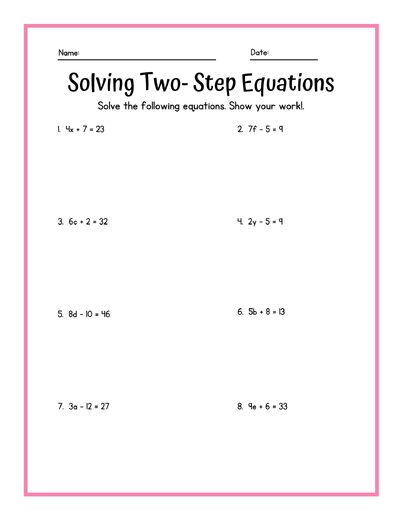
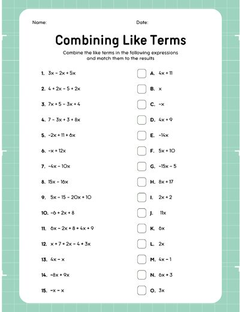
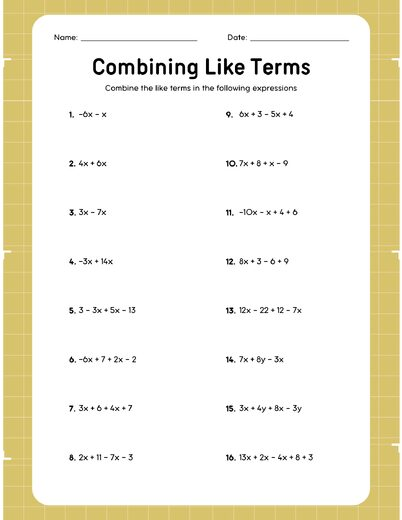

Like Terms: UNO & Practice
B3_10-9_13LessonPlan.docx
Also in: Block 3 Math/Week 7/Lesson Plan, Block 3 Math/Week 6/Lesson Plan
PA Standards
CC.2.2.7.EE.A.1 (foundational skill per IEP goals): Apply properties of operations to add, subtract, factor, and expand linear expressions, including combining like terms.
Essential Questions
- What makes two terms 'like terms'?
- How do we combine like terms to simplify an expression?
Objectives
- Students will determine whether given terms are like terms or not like terms.
- Students will review key vocabulary: coefficient, variable, constant, exponent.
- Students will practice identifying and combining like terms through a game (Combining Like Terms Uno).
- Students will independently combine like terms on a practice worksheet.
- Students will review combining like terms through a Gimkit game.
Assessment
- Accuracy of the post-it note sorting activity (like term vs. not a like term)
- Vocabulary review responses
- Participation and performance in Combining Like Terms Uno
- Completed combining like terms worksheet
- Gimkit performance data
Differentiation
- Visual schedule posted showing today's activities and materials
- Post-it note sorting activity is hands-on and low-stakes, giving a concrete way to check understanding before the lesson moves on
- Vocabulary briefly reviewed right before the game to refresh key terms
- Game played in two smaller groups, each with a teacher, to allow more individualized support
- Teacher circulates during independent worksheet work to check understanding and answer questions
- Gimkit provides a gamified, low-pressure format for additional review
Classroom Environment & Routines
- Visual schedule displayed showing today's activities and materials needed
- Clear verbal and visual cues signal transitions, especially around the lunch break
- Two smaller groups used for the Uno game, each led by a teacher, to allow more individualized support
- Positive, game-based review environment maintained throughout
Activating Prior Knowledge
- (0-5 min) Students enter, find their seats, and review the visual schedule showing today's activities and materials needed.
- (5-14 min) Warm-up: each student receives a post-it note with a term on it. With a sample term (2x) on the board, students determine if their term is a like term or not and place it under 'Like Term' or 'Not a Like Term.' Check as a class, then briefly review what makes terms 'like terms.'
Materials Needed
- Visual schedule (board/projector)
- Post-it notes, each with a term written on it, for the warm-up sorting activity
- Board space labeled 'Like Term' / 'Not a Like Term'
- Combining Like Terms Uno card sets (for two groups)
- Combining like terms practice worksheet
- Devices for Gimkit
Vocabulary
- Like terms — terms that have the same variable raised to the same power
- Coefficient — the number multiplied by a variable
- Variable — a letter that represents an unknown or changing number
- Constant — a number with no variable attached
- Exponent — review
Lesson Sequence
- (14-16 min) Quick review of vocabulary: coefficient, variable, constant, exponent.
- (16-20 min) Explain the rules for Combining Like Terms Uno. Split students into two groups (one with each teacher in the room).
- (20-35 min) Play Combining Like Terms Uno: each student gets 5 cards and can only play a card if it is a like term matching the one played before theirs.
- (35-45 min) Stop before lunch to discuss what was learned and reviewed today. Closing statement: "Today we continued our lesson on combining like terms and we reviewed our vocab again. After lunch we will do more review on combining like terms."
- LUNCH ---
- (45-55 min) Quick review on the board of how to combine like terms.
- (55-75 min) Students independently complete a practice worksheet on combining like terms. Teacher circulates to check understanding and answer questions.
- (75-90 min) Once all students finish the worksheet, play a Combining Like Terms Gimkit for extra review.
Closure
- Wrap up Gimkit and collect the completed worksheet.
- Briefly recap what makes terms 'like terms' and how to combine them.
Show the original document here
Materials from the same week




